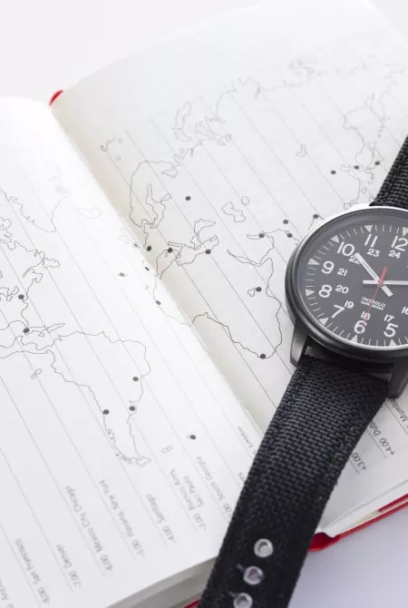

시간대
도쿄는 그리니치 표준시(GMT)보다 9시간 앞서 있습니다. 서머타임은 없습니다. 여름은 오후 7시 30분 전후까지 날이 밝고, 겨울은 오후 5시 전후에는 어두워집니다.
전원플러그・전기
일본의 전압은 100V, 주파수는 50~60Hz입니다. 소켓은 납작한 구멍이 2개 뚫려 있는 A형입니다. 외국제 가전제품을 사용할 경우, 주파수 변환기와 플러그 어댑터가 필요합니다.

기후
일본은 온도변화가 사계절에 따라 가장 뚜렷합니다. 북쪽부터 남쪽까지 약 25도의 광범위한 위도에 걸쳐있으며 겨울에는 시베리아 북풍을 받고, 여름에는 태평양 남풍의 영향을 받습니다.
WIFI와 통신
도쿄내 주요 관광시설이나 하네다 공항및 나리타 공항의 터미널 빌딩을 비롯해 많은 전철이나 버스에서 무료 Wi-Fi를 이용할 수 있습니다. 등록에는 이메일이나 SNS가 필요한 경우도 있습니다.

통화・환전
도쿄는 아직도 현금 사용이 비교적 많습니다. 많은 장소에서 신용카드 결제가 가능하지만, 모든 매장에서 가능한 것은 아닙니다.

비자・입국
한국에서 일본으로 입국하는 경우, 일반적인 관광으로는 무비자로 입국할 수 있습니다. 하지만 장기로 체류하고자 하시는경우, 목적에 맞는 비자를 발급 받도록 합시다.